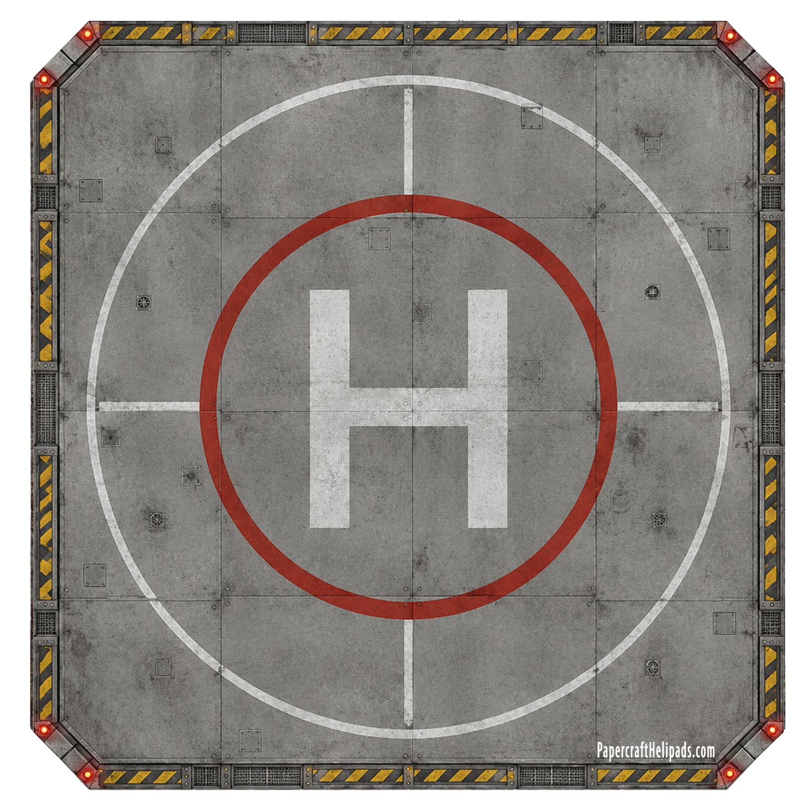

Hospital Helicopter Landing Pad
A detailed hospital-style landing pad with concrete textures, safety markings and a large central H. Print it as a flat landing zone for rescue helicopters, drones and miniature displays.

Download Free PDF